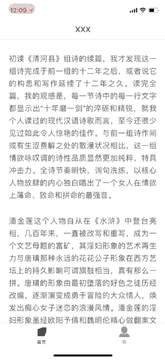

iOS实现夜间模式

本文实现思路主要参考了这里，大概就是为日间模式与夜间模式各提供一份资源文件，资源文件中包含颜色值与图标名，切换主题加载相应主题的资源并刷新页面的控件即可，这和实现国际化有点类似。
阅读类APP涉及的技术
飞地是一款诗歌轻阅读产品，在技术选型时内容的载体采用了HTML，这样内容可以适用于全平台显示。
轻阅读是从技术角度分析的，因为没有像微信读书这类应用有长篇文字的书籍，需要实现各种PDF和ePub格式解析以及排版，我们只需要用UIWebView即可解决。
3D Touch大法
Demo同步更新到Swift2.3
3D Touch最先应用在Apple Watch上面，但叫Force Touch，后在iPhone6s上加入了此特性，并改名3D Touch。值得注意的是目前3D Touch只支持iPhone6S以后的机型，包括现有Xcode7中6s的模拟器也不支持，不过Github上的SBShortcutMenuSimulator项目通过Hack方式已经实现了Quick Actions快捷访问，但不能使用Peek&Pop快速预览。


Copyright © 2015 Powered by MWeb, Theme used GitHub CSS.